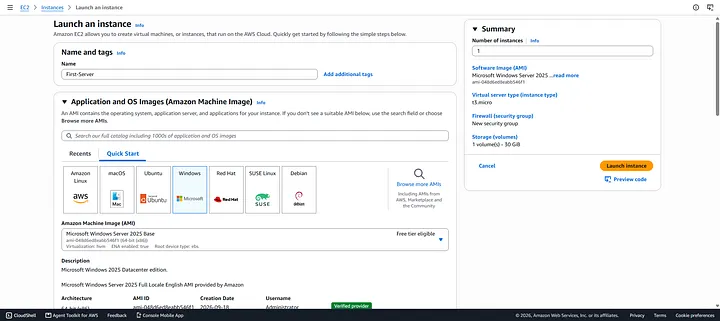

Mastering AWS Cloud Computing
A Comprehensive Guide to Launching Your First Linux & Windows EC2 Instances
Welcome to the ultimate beginner’s guide to cloud computing and Amazon Web Services (AWS)! Whether you are a developer looking to deploy your code or an aspiring DevOps engineer building your cloud infrastructure skills, understanding how to provision and manage virtual servers is a vital milestone.
In this article, we will break down cloud computing fundamentals, explore core service models, walk through setting up your AWS Free Tier account, and launch Linux and Windows EC2 instances with active web servers running.
Part 1: Cloud Computing Fundamentals
What is Cloud Computing?
- Historically, companies had to purchase physical servers, incurring massive upfront costs, high 24/7 electricity and maintenance bills, hardware failure risks, and physical space requirements.
- Cloud Computing eliminates these hurdles by allowing you to provision and use servers, storage, databases, and networking over the internet instead of owning physical hardware.
- Instead of buying 10 physical servers, you rent them on-demand from a cloud provider and pay only for what you consume.
Cloud Service Models
Cloud computing services are categorized into three core models:
- IaaS (Infrastructure as a Service): You manage the OS, applications, and runtime, while the provider manages physical hardware, virtualization, and data centers. Example: AWS EC2.
- PaaS (Platform as a Service): You manage only your application code and configurations, while the provider handles the OS, runtime, scaling, and underlying infrastructure. Example: AWS Elastic Beanstalk.
- SaaS (Software as a Service): You use fully managed end-user software over the web; the provider manages every layer. Examples: Gmail, Microsoft 365.
Part 2: Setting Up Your AWS Free Tier Account
Follow this step-by-step procedure to set up a secure AWS Free Tier account:
- Go to the AWS Website: Navigate to the official Amazon Web Services portal and click Create an Account.
- Enter Root User Details: Provide your root email address and choose an account name. Click Verify email address, enter the 6-digit confirmation code from your inbox, and establish a strong password.
- Select a Plan: Select the Free Plan option to stay eligible for standard tier allowances.
- Fill in Contact Information: Enter your full name, phone number, and address. Agree to the terms and select Agree and continue.
- Add Payment and Verification: Choose your preferred verification method (such as UPI or credit card) and complete authorization.
- Complete Identity Verification: Select your account purpose (e.g., Academic or Individual) and complete identity verification (such as via Aadhaar/DigiLocker).
- Phone Number Verification: Complete SMS OTP verification using your active mobile number.
- Finalize Setup: Wait briefly while AWS provisions your account backend. Once ready, sign in to the AWS Management Console with your root credentials.
Part 3: Hands-On — Launching and Configuring Your EC2 Instances
Amazon EC2 (Elastic Compute Cloud) enables provisioning resizable virtual compute capacity in the cloud within minutes.
Step 1: Launch an Instance in the AWS Console
- Log in to the AWS Management Console and select your preferred target region (e.g., Asia Pacific (Mumbai) or US East (N. Virginia)).
- Search for EC2 in the top search bar and open the EC2 Dashboard.
- Click Launch instance.
-
Configure your instance parameters:
- Name:
First-Server - AMI (Amazon Machine Image): Select Amazon Linux 2 (or Ubuntu) for Linux, or Windows Server for Windows.
- Instance Type: Choose
t3.micro(Free Tier eligible). - Key Pair: Generate a new key pair named
my-keywith RSA encryption and.pemformat. Store this file securely. - Network Settings: Allow SSH (Port 22) for Linux or RDP (Port 3389) for Windows, alongside HTTP (Port 80) for web traffic.
- Storage: Keep default 8 GB for Linux, or set to 30 GB for Windows Server.


- Name:
- Click Launch Instance.

Step 2: Connecting to Your Instance
A. Connecting to Linux (via Git Bash / Terminal)
Navigate to the folder containing your downloaded key file and adjust permissions:
cd ~/Downloads
chmod 400 my-key.pem
ssh -i my-key.pem ec2-user@YOUR_PUBLIC_IPubuntu (e.g., ubuntu@YOUR_PUBLIC_IP).
B. Connecting to Windows
In the EC2 console, select your Windows instance, click Connect, open the RDP client tab, and click Get Password using your .pem file. Connect using Remote Desktop Connection with the decrypted Administrator password.

Step 3: Installing and Testing a Web Server
Option A — Linux: Installing Apache HTTP Server
# Update packages
sudo yum update -y
# Install Apache
sudo yum install httpd -y
# Start and enable the service
sudo systemctl start httpd
sudo systemctl enable httpd
# Verify service status
sudo systemctl status httpdsudo apt update && sudo apt install apache2 -y
sudo systemctl enable --now apache2Option B — Windows: Installing IIS via Server Manager
- Open the Start Menu inside your RDP session and launch Server Manager.
- Select Add roles and features on the Dashboard.
- Navigate to the Server Roles stage and check Web Server (IIS).
- Accept standard role dependencies and complete the installation wizard.
.webp)
Step 4: Test Your Web Server
Open a browser and enter your public IPv4 address:
http://YOUR_PUBLIC_IPYou will see the default Apache Test Page on Linux, or the Internet Information Services (IIS) welcome page on Windows.